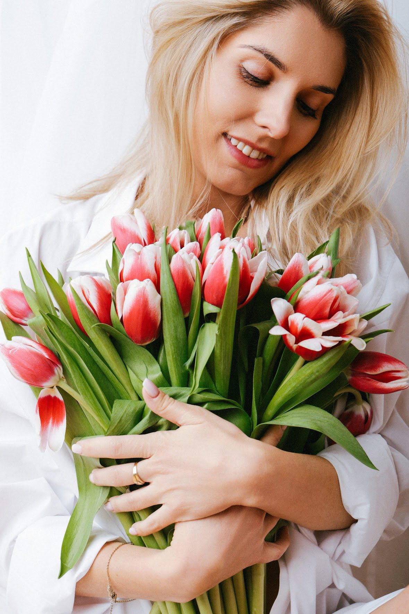
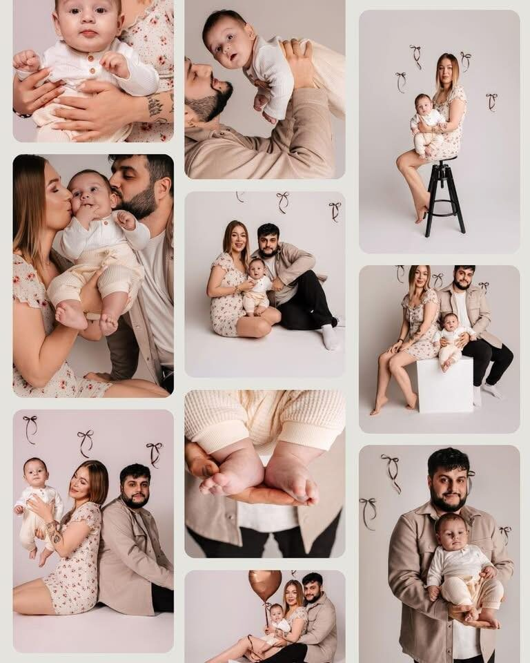
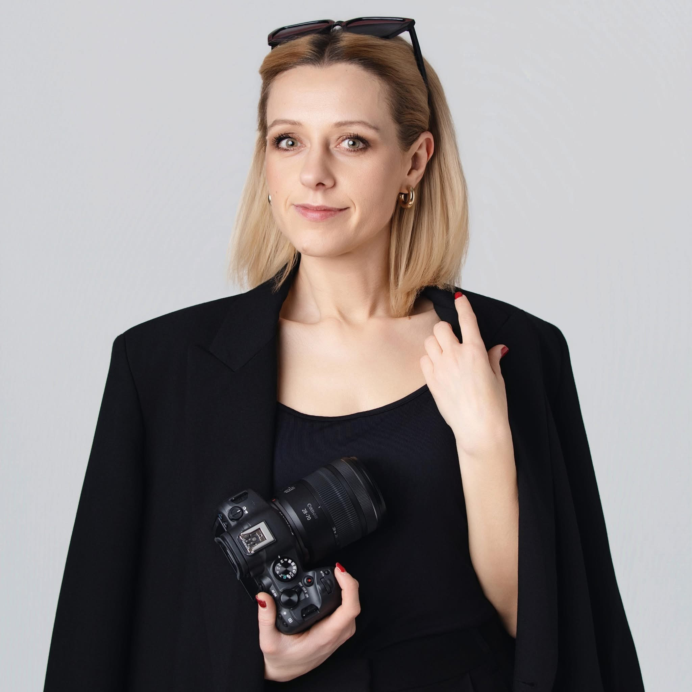

delikatne kadry • naturalne światło
Fotografia, która zatrzymuje ważne chwile...
Naturalne sesje kobiece, ciążowe i rodzinne.

Oferta
Sesje w studio lub plenerze, w lekkiej i naturalnej oprawie. Wybierz to, co pasuje do Ciebie. Pełny opis pakietów dostępny na ewelina-kedzierska-fotograf.mafelo.net
Pakiet Premium
Pakiet Platinum
Galeria
Mały podgląd ulubionych kadrów. Pełna galeria czeka na osobnej stronie.
 Sesje kobiece
Sesje kobiece
 Sesje ciążowe
Sesje ciążowe
 Sesje dziecięce
Sesje dziecięce

Sesje rodzinne
O mnie
Spokojne tempo, relaks, uważność i światło.
Fotografia zawsze zajmowała w moim sercu szczególne miejsce. Do pewnego momentu wystarczały zdjęcia wykonane telefonem, wrzucone na Insta. Ale przyszedł moment, w którym poczułam, że chcę pójść z tym dalej, poświęcić się swojej pasji, fotografować emocje. W moim studio w Ząbkach pracujemy spokojnie, bez presji i pozowania na siłę. Prowadzę Cię przez całą sesję, pokazuję dokładnie co robić, krok po kroku. Dzięki temu wychodzisz z zdjęciami, na których naprawde się sobie podobasz. Jednocześnie zatrzymujemy razem te uczucia i myśli, które w trakcie sesji Wam towarzyszą.
Przed sesją rozmawiamy o Twoich oczekiwaniach, by zdjęcia były naturalne i pełne harmonii.
- • delikatna obróbka, bez agresywnych filtrów
- • naturalna, spójna kolorystyka
- • jasna komunikacja i prosty proces rezerwacji

Jeśli czujesz, że to dla Ciebie, napisz.
Ząbki, ul. Ks. Skorupki 43